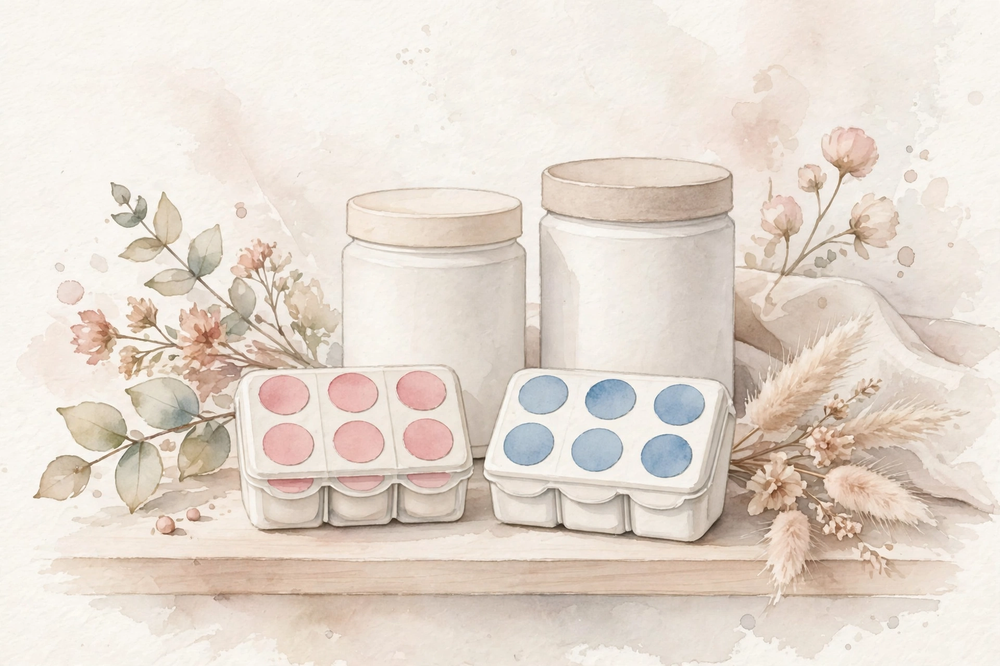
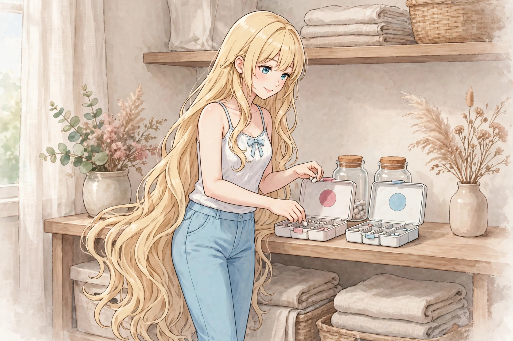

トップ ＞ インナーケア・サプリ ＞ 家族と分ける時の保管と表示確認
家族と分ける時の保管と表示確認

家族で暮らしていると、食卓や棚に複数の人のサプリメントが並ぶことがあります。見た目が似た容器も多く、取り違えや、誰の分か分からなくなる問題が起きがちです。この記事では、家族と分ける時の保管と表示確認のポイントを整理します。
仕分けは「名前」と「表示の控え」をセットで
ピルケースなどに小分けする場合は、ケースに名前や色の目印をつけます。あわせて、元のパッケージの表示（商品名、目安量、賞味期限、注意書き）を写真に撮っておくと、小分けした後でも確認ができます。小分けした分だけを持ち歩く場合も、表示の控えがあると安心です。
家族で同じ商品を飲む場合でも、1日の目安量は人ごとに表示を確認するのが基本です。年齢や体格によって案内が異なる商品もあるため、「家族だから同じ量」とは考えない方が確実です。
対象の表示は、人ごとに確認する
商品によっては、対象について「成人向け」「お子様は避けてください」といった表示がある場合があります。家族と分ける前には、それぞれの商品の対象表示を確認してください。特に子どもの手の届く場所への保管は避け、置き場所そのものを分けるのが安全です。
高齢の家族の分については、飲んでいる薬との関係で確認が必要な場合もあります。判断に迷う場合は、医師・薬剤師等の専門家への相談が基本です。
置き場所は「人ごと」に分ける
保管場所は、食卓の各自の席、洗面所の棚の段など、人ごとに場所を決めておくと取り違えが減ります。来客時に目につく場所や、子どもの手の届く低い場所は避け、高温多湿にならない場所を選ぶことも、表示の保管方法の案内に沿う形です。
保管の温度と場所についても、家族で分ける場合ならではの注意があります。サプリメントは、高温多湿を避けて保管することが、表示の案内として一般的な形です。家族の出入りが多いキッチンの棚は、調理の熱や湿気の影響を受けやすい場所でもあります。置き場所を決めるときは、目につきやすさだけでなく、熱と湿気から離れているかも確認してください。また、来客時に子どもの手の届く場所へ一時的に移動させることのないよう、置き場所は固定しておくのが安全です。定期的に棚を見直し、賞味期限の近いものが手前に来るように並べ替える習慣も有効です。
サプリメントは食品ですが、対象や目安量は商品と人によって異なります。この記事は保管と表示確認の案内です。体調や服薬に関わる判断は、医師・薬剤師等の専門家にご相談ください。

セラフィナ「分ける時は、名前の目印と表示の写真がセット。置き場所も人ごとに決めよう」